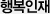
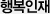

행복경영에 뿌리를 둔 SK사회공헌 활동
SK는 인간중심의 경영철학을 바탕으로 인재양성에 주력하면서 반세기 동안 사회공헌활동의 선도적 역할을 담당해 왔습니다.
이러한 인간중심주의는 ‘행복경영’이라는 독특한 경영철학으로 발전했고 SK의 사회공헌활동은 행복경영에 뿌리를 둔 채 기업이 속한 사회 전체의 행복 극대화를 목표로 진행되고 있습니다.
행복한 참여, 행복한 상생, 행복한 변화
SK는 3가지 원칙을 가지고 사회문제의 근본적 해결에 적극적으로 참여하고 있으며 사회 구성원들과 쌍방향으로 소통하는 사회공헌활동을 지향하고 있습니다.
- CEO부터 신입사원에 이르기까지 SK 임직원은 자발적이고 의욕적으로 자원봉사에 참여합니다.
- 취약계층 문제를 일시적, 자선적 차원이 아닌 체계적인 자립 지원으로 근본적인 사회 변화를 추구합니다.
따로 또 같이 커지는 행복나눔
SK는 ‘따로 또 같이’라는 SK만의 독특한 경영방법을 가지고 있으며 효과적이고 체계적인 실천을 위해서 사회공헌활동에도 동일하게 적용하고 있습니다.
각 관계사가 가지고 있는 특성과 역량을 살려 “따로”의 방식으로 각사별 프로그램을 진행하고 중점 사업에 대해 그룹차원의 시너지를 위해 “함께”하는 방식으로 힘을 모아 사회공헌을 추진해오고 있습니다. 그리고
행복나눔재단, SK미소금융재단, 한국고등교육재단을 통하여 보다 적극적으로 사회에 기여하고 있습니다.
사별대표 프로그램
-
- SK 주식회사
-
장학퀴즈 후원 등 인재 양성
-
자발적 자원 봉사 문화 확산
- SKC
-
청소년 교육비 후원
- SK증권
-
청소년 경제교실
- SK 커뮤니케이션즈
-
재능 나눔 바자회
-
- SK 이노베이션
-
에너지복지 지원
-
자립형 사회공헌
- SK주식회사 C&C
-
정보격차 해소
-
생애주기별IT교육
- SK E&S
-
우수인재 육성 및
-
소외계층 후원
-
- SK텔레콤
-
ICT 역량 활용한 사회 가치 창출 프로그램
- SK 플래닛
-
자폐 범주성 장애인 재능자활 프로그램 (E-STAR)
- SK 가스
-
저소득층 아동/청소년 후원 및 환경정화활동
-
- SK 네트웍스
-
Dream Package 만들기
-
시각장애아동 산행보조
- SK 건설
-
주거환경 개선
-
저소득 아동/청소년 후원
- SK 하이닉스
-
미래인재육성사업
-
행복Plus 영양도시락
-
- SK 케미칼
-
실버영화관 지원
-
환경정화활동
- SK 해운
-
장애우 한강수상 체험
-
해양캠프
- SK 브로드밴드
-
해피인터넷 사업
-
IPTV 기반 농산어촌 교육복지